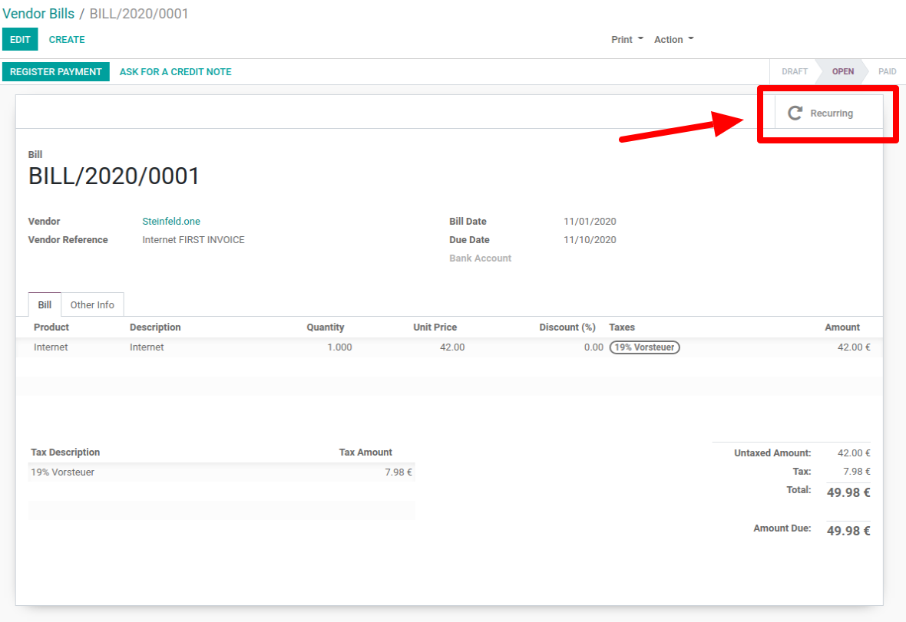
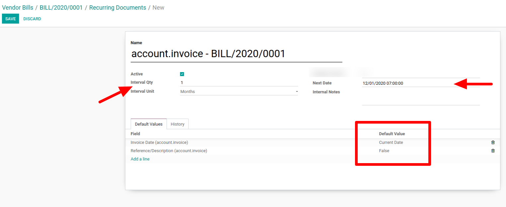
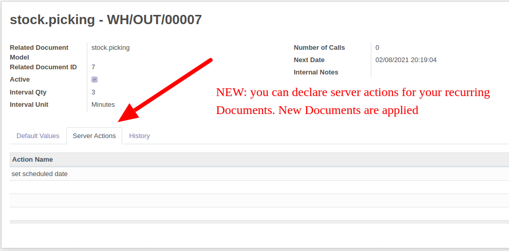
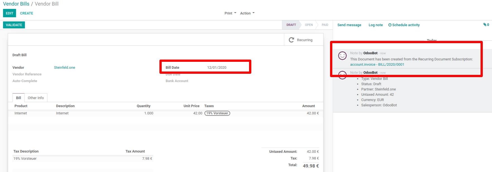

Recurring Documents
This module is the technical basis to have every document in
Odoo re-created in a time interval.
Please note that this is a basic technical module and there
are some additional modules that activate this function for the
respective documents. This module does nothing without the additional
modules
This module only needs to be purchased once. And for the
respective documents (e.g. invoice, offer, tasks) can be purchased
separately
exemplary use cases:
- The monthly supplier invoice for the Internet should be
created automatically
- A customer wants to be supplied every 14 days.
- For a framework agreement, the following should be purchased
from a supplier every month
The first document is created
manually and the subsequent documents are created automatically
| Manually created |
|
Automatic |
|
Automatic |
|
Automatic |
|
 |
|
|
|
|
|
Manually created Document #1

Create Recurring from #1
Set the next Date, the intervall an a name You
can choose current Date or None Value for Fields

You can declare Server Actions which are applied on new records

Automatically create Document #2 -
#xx
The next document will be created per time job Every
Month there will be a new document
